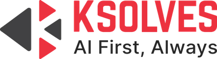
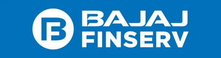
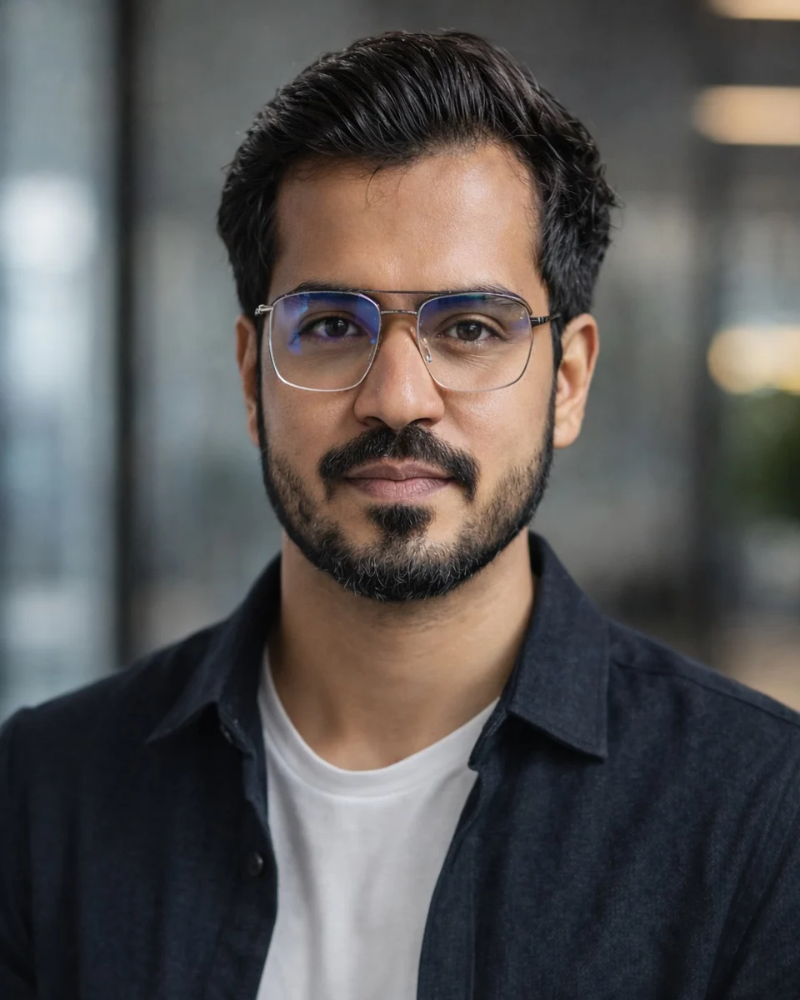

Technical SEO
Site audits, site architecture, internal linking and Core Web Vitals fixes so search engines can crawl, render and index every page that matters.
6+ years helping agencies, SaaS companies and in-house teams in India and Canada get found. I combine technical audits, keyword strategy and link building with AI search visibility (AEO/GEO).
Chirag Arora is a Senior SEO Executive with 6+ years in technical SEO, content optimisation, link building and AEO/GEO. He currently leads a 6-member SEO and content team at Ksolves.
Source · linkedin.com/in/chiragarora0777

I help businesses grow their organic presence, from crawlable site architecture to content that ranks in Google and gets cited by AI answer engines.
Site audits, site architecture, internal linking and Core Web Vitals fixes so search engines can crawl, render and index every page that matters.
Answer-ready content and entity signals that help your brand show up in Google AI Overviews, ChatGPT, Perplexity and Claude.
Keyword research, topic clusters and on-page optimisation for landing pages, product pages, blogs, case studies and webinars.
Off-page campaigns at scale, from guest posting to backlink profile clean-up. Built 50+ backlinks a week for Bajaj Finserv.
Google Business Profile, citations and local rankings managed with BrightLocal for service businesses in India and Canada.
Google Ads and Meta lead-gen campaigns run within budget, with GA4 and Search Console reporting.
Built AI search visibility (AEO/GEO) across Salesforce, AI/ML, Big Data, DevOps and Microsoft 365 service lines.
Owned local SEO for the moving company's Mississauga branch in Ontario, Canada.
Managed SEO for the client at DigiGenius, combining on-page, local SEO and backlink work.
Planned and launched the blog from scratch, ranking it for high-volume "Pradhan Mantri Awas Yojana" searches, then mentored new hires and ran SEO training sessions.
Led off-page SEO for the brand, then moved to on-page SEO for its home-loan vertical.

I've spent 6+ years in SEO across agencies, SaaS and in-house teams, first in Noida and New Delhi, then in Mississauga, Canada, and now back in India leading SEO at Ksolves, for clients such as Fresh Tracks Canada and Stride Europe.
My work sits where technical SEO meets content: clean architecture, keyword strategy and topic clusters, steady link building, and now making sure brands are visible in AI answers as well as blue links.
Ksolves India Ltd.
TechMagnate
SEMrush SEO · HubSpot Marketing · Claude AI (Anthropic)
Chirag Arora is a Senior SEO Executive at Ksolves, where he manages SEO for the Ksolves website. He has 6+ years of experience in technical SEO, content strategy, link building and AI search visibility (AEO/GEO), working with agencies, SaaS companies and in-house teams in India and Canada.
I optimise for two audiences: Google's blue links and AI answer engines like ChatGPT, Perplexity and Google AI Overviews. At Ksolves, that approach grew AI-search traffic 22x and AI-sourced leads ~85x.
Yes. I've worked with businesses in India, Canada and Europe, including Fresh Tracks Canada (luxury travel), Stride Europe (fitness equipment) and No Problem Movers (Mississauga). Early in my career, I audited sites for 10+ international clients at ClixLogix and built backlinks for their target keywords.
AEO (Answer Engine Optimisation) and GEO (Generative Engine Optimisation) help your brand get cited in AI-generated answers. More buyers now ask ChatGPT or Perplexity instead of searching Google, so if AI tools don't mention you, you're invisible to those buyers.
No one can guarantee AI citations. But you can make your brand much easier to cite with answer-ready content, clear entity signals, structured data and authoritative mentions. These are the same methods I used to grow AI-sourced leads ~85x at Ksolves.
Yes. AI answer engines pull heavily from pages that already rank well and are technically sound. Strong technical SEO, content and backlinks are still the foundation, and AEO/GEO builds on top of them.
Technology services (Salesforce, AI/ML, Big Data, DevOps), finance (Bajaj Finserv), travel, fitness eCommerce, local services and moving companies. The industry changes, but the method stays the same: fix the technical base, then build content and authority.
WordPress, Wix, DatoCMS (headless) and Odoo. I've also migrated a site from Wix to WordPress with zero ranking loss.
Yes. I've managed Google Business Profiles, citations and local rankings with BrightLocal for businesses in Canada. One example is the No Problem Movers Mississauga location, where local calls doubled.
Technical fixes can show impact within weeks. Content and authority usually take 3-6 months to compound. A new blog section I launched at TechMagnate drove 50,000+ organic visits in its first month, but results depend on competition and the site's starting point.
Both. At Ksolves I lead a 6-member team (writers, an SEO executive, a developer and a designer), and I'm still hands-on with audits, keyword strategy and client projects like Fresh Tracks Canada.
At Ksolves, I analysed our Big Data technology pages and spotted a gap: we had no dedicated support pages for each technology. I proposed separate support pages for each one, along with matching migration pages. The search volume was low, but the intent was high. People searching those terms needed help right away. Within a short time, those pages started bringing in quality leads. It's a reminder that the best keyword isn't always the biggest one.
"SEO is dead because of AI." The opposite is true: AI search rewards the same fundamentals, and the stakes are higher.
Family. The plan was always to settle in India with my family. My years in Mississauga gave me hands-on experience with Canadian businesses and markets, and I now bring that to clients in Canada, Europe and beyond, working from India.
Whether you need a technical audit, a content strategy or visibility in AI search, send me a message on LinkedIn.